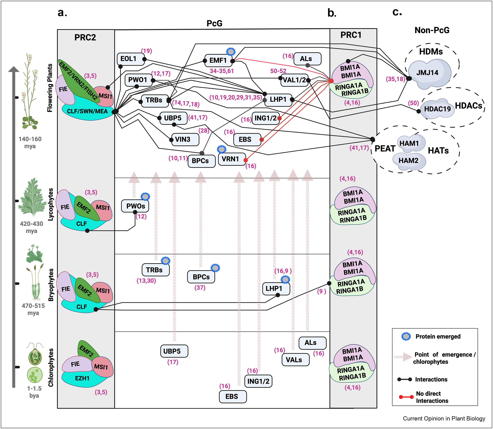

Evolution of Chromatin Regulators
Investigating the emergence, diversification and evolutionary history of chromatin regulatory proteins across plant lineages.
PLANT EPIGENETICS • CHROMATIN • EVOLUTION
Ph.D. in Biotechnology
Investigating how plant chromatin regulatory systems evolve, function and shape genome organisation, development and adaptation.

RESEARCH INTEREST
My research focuses on understanding how chromatin regulatory systems evolve, how they function at the molecular level, and how they influence genome organisation, plant development and adaptation.
I combine evolutionary biology, molecular biology, plant epigenetics, chromatin biology, genomics and computational approaches to investigate regulatory mechanisms across plant lineages.
RESEARCH
My research programme explores the evolution and function of plant chromatin regulatory systems across molecular, genomic and evolutionary scales.
Investigating the emergence, diversification and evolutionary history of chromatin regulatory proteins across plant lineages.
Understanding how chromatin regulators interact with proteins, DNA and chromatin to establish functional regulatory states.
Exploring how chromatin regulatory systems contribute to genome architecture, nuclear organisation and gene regulation.
Investigating how epigenetic states respond to developmental and environmental signals to influence plant plasticity and adaptation.
COLLABORATION
I am actively looking for collaborators interested in plant epigenetics, chromatin regulation and the evolution and function of epigenetic mechanisms.
I would be happy to assist or supervise Master's and PhD students interested in review writing, in silico analysis, computational biology, or manuscript development related to plant epigenetic mechanisms.
Collaborative projects connecting evolutionary, molecular and computational approaches are particularly welcome.
Start a CollaborationRESEARCH FRAMEWORK
Selected research highlighting how chromatin regulatory proteins connect molecular mechanisms with plant development and genome organisation.

This study shows that PWO1 and TRB proteins co-occupy telomeres, including interspersed telo-box motifs, to regulate chromatin organization and plant development, particularly ectopic lignin deposition.
Our findings reveal how these nuclear protein factors coordinate epigenetic states in Arabidopsis thaliana, providing a framework for understanding the control of developmental programs.
Read the paper ↗
This research explores the evolutionary interplay between Polycomb-group associated histone modifiers and accessory proteins, examining how regulatory systems have emerged, diversified and functionally adapted throughout plant evolution.
The work provides an evolutionary perspective on how chromatin regulatory networks are built and how accessory factors contribute to the diversification of epigenetic regulation.
Read the review ↗SELECTED PUBLICATIONS
A selection of publications highlighting my work in plant chromatin, epigenetics, evolution and regulatory biology.
Khan, A. et al. bioRxiv.
DOI ↗Khan, A. et al. New Phytologist.
DOI ↗Khan, A. & Farrona, S. Molecular Plant.
Khan, A., Ghosh, B. & Schubert, D. Current Opinion in Plant Biology, 88, 102783.
DOI ↗Kusova, A. et al. Plant Molecular Biology.
DOI ↗Shrestha, A., Khan, A. & Dey, N. Molecular Plant, 11(7), 886–898.
DOI ↗ACADEMIC JOURNEY
Institute of Plant Molecular Biology, Biology Centre CAS, České Budějovice.
Epigenetics of Plants, Freie Universität Berlin.
Institute of Plant Molecular Biology, Biology Centre CAS.
Institute of Life Sciences, DBT, Government of India, affiliated with Utkal University.
Utkal University, Bhubaneswar, India.
Ramjas College, University of Delhi, India.
ABOUT
My research brings together evolutionary biology, molecular biology, chromatin biology, genomics and computational approaches to understand how plant epigenetic regulatory systems evolve and function.
A central goal is to connect molecular mechanisms with genome organisation, developmental regulation and plant adaptation.
CONTACT
I am open to scientific collaborations, student supervision and discussions around plant epigenetic mechanisms.